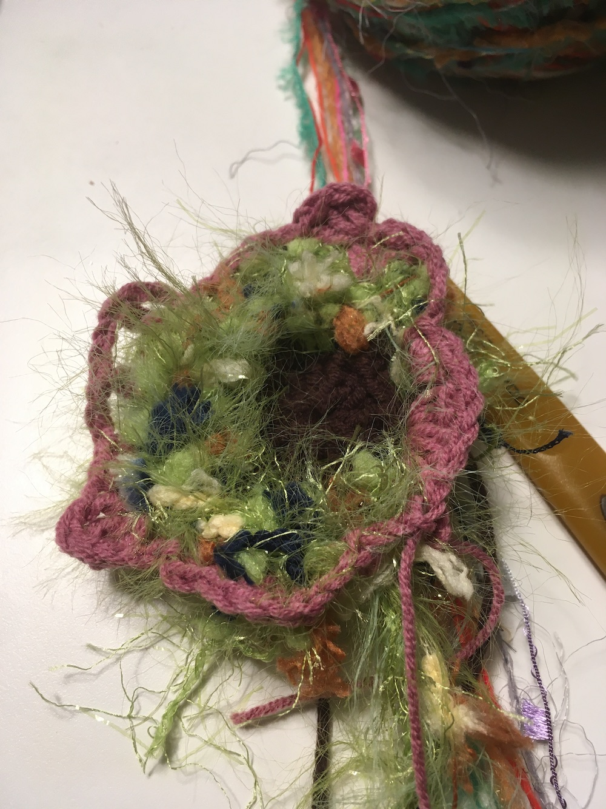
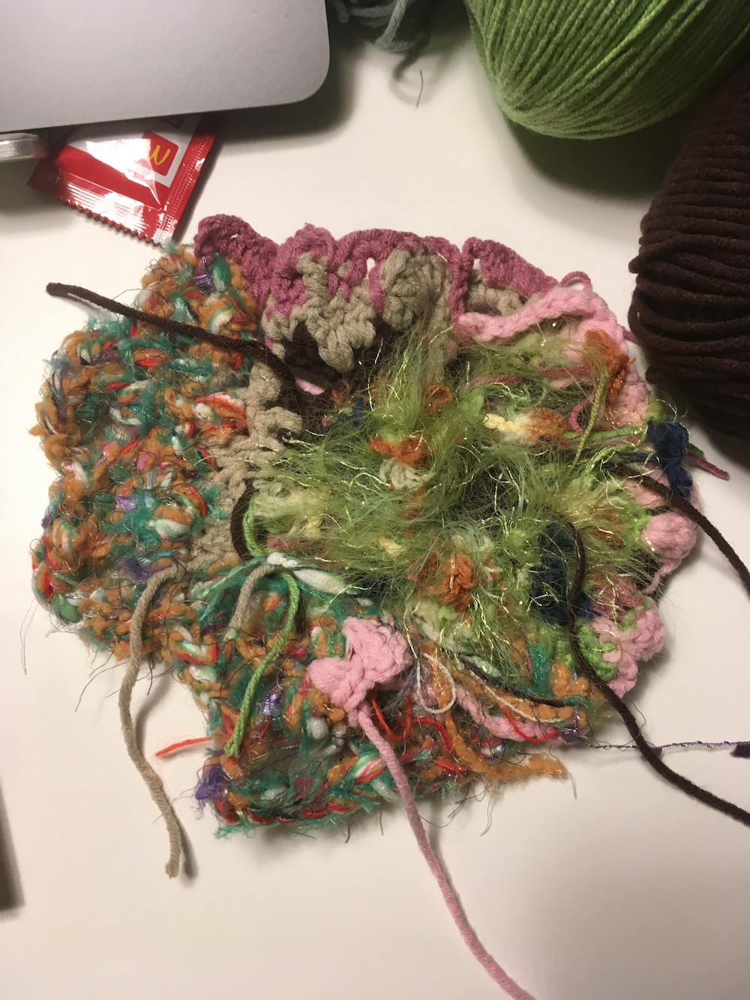
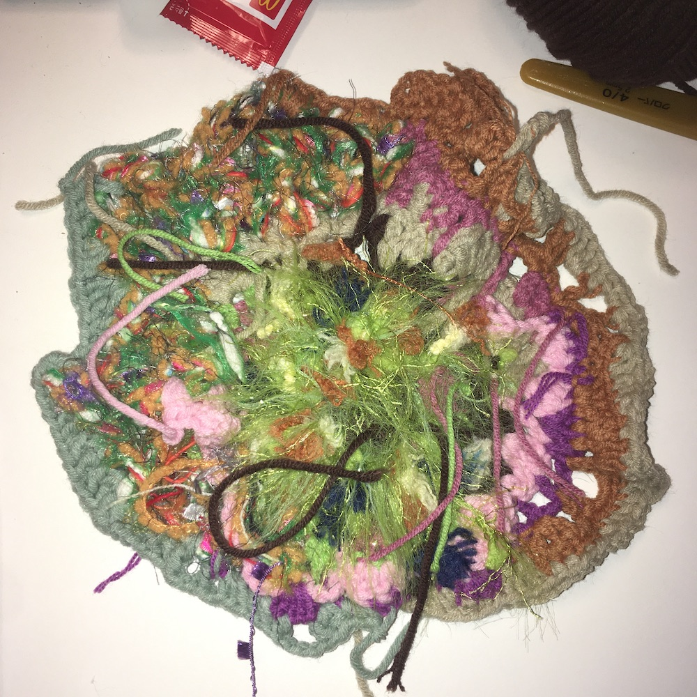
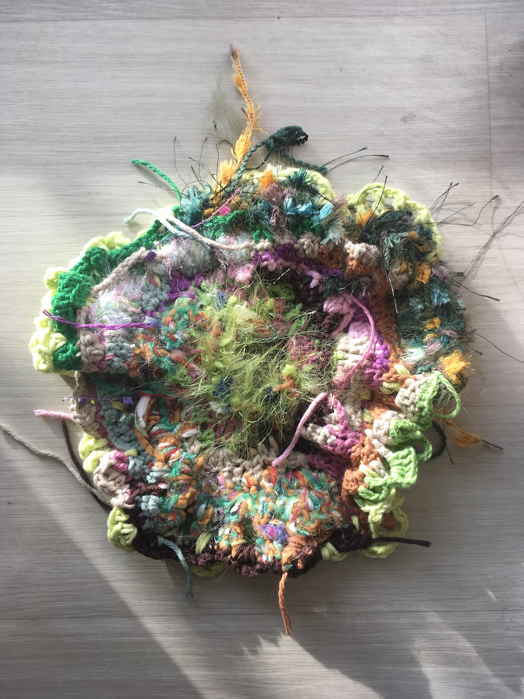
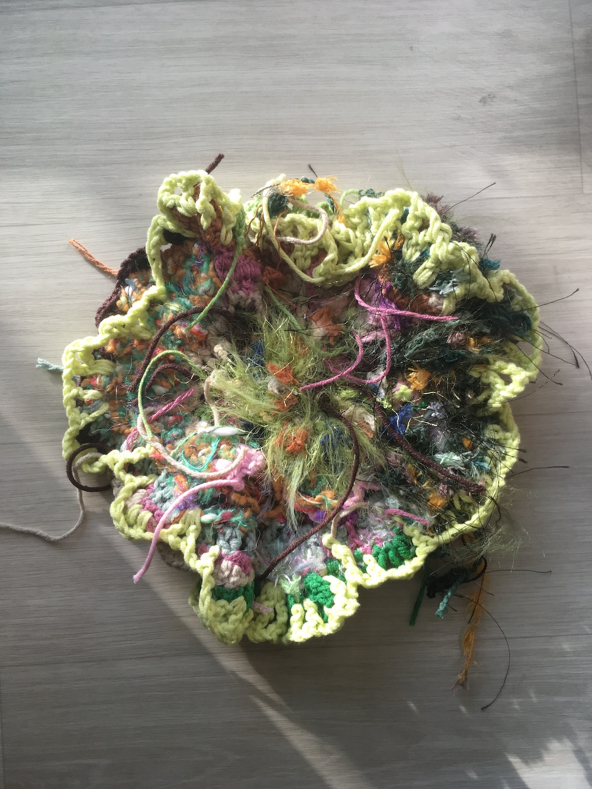
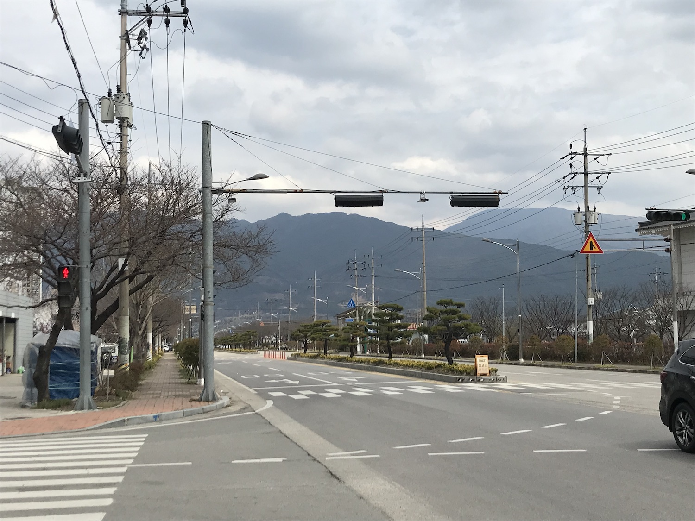
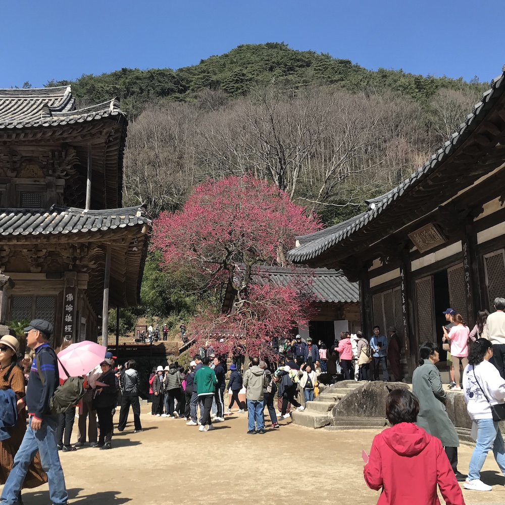
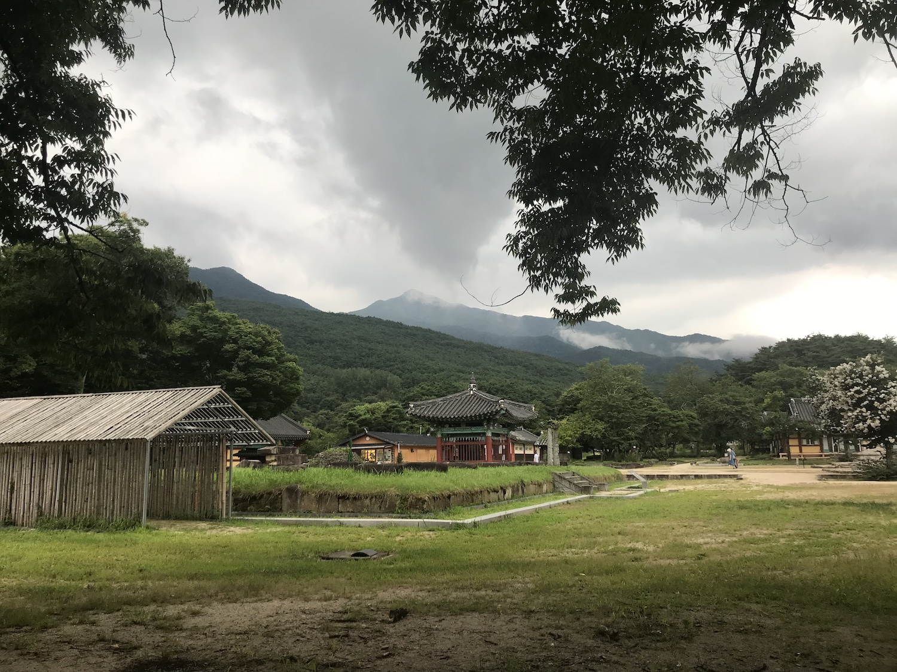
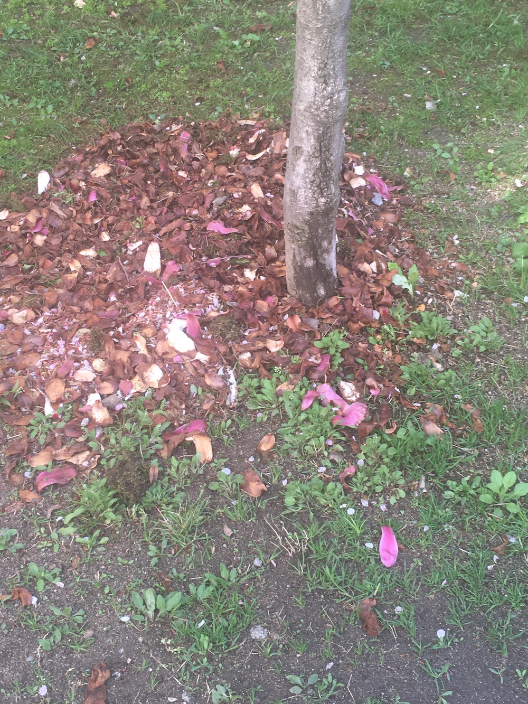

구례 지리산 이야기하려고 산 도안을 보고 뜨고 있었는데 왜인지 재미가 없어서 끝까지 뜨지 못했다. 그 도안이 마음에 안들었던 건.. 산이 너무 언덕같았고, 색이 너무 단순하게 초록과 연두였다. 그러다 최근에 그냥 내 인상에 남은 지리산 색의 실로 아무렇게나 해볼까~ 싶어서 도전해봤다. 그리고 또 정말 멋진 실로 뭐라도 빨리 떠야 해서 이것저것 색을 모아봤다. [정말멋진실의 순기능]
흙색, 나무색이 있어야 했고, 정말 멋진 실들 중에 초록색의 색감을 가진 것을 사용하고 싶었고, 그리고 구례 화엄사에서 봤던 홍매화의 붉은 색, 진한 분홍색도 쓰고 싶었고, 산이니 초록색이 필요한데 여러 가지 초록색을 다 쓰고 싶었다. 이제 막 싹이 날 때의 여린 연두색부터 여름의 초록색과 색이 바래가는 잎의 색도 필요했다. 어쩐지 여름에 갔을 때는 흐린 날의 산을 본 기억이 많이 남았고, 봄에 갔을 때는 봄이라기엔 좀 애매하게 여전히 겨울 같은 색감이었다. 이렇게 막 섞어써도 눈에 거슬리지 않는 건 내가 고른 색이라 그런 건지, 자연의 색이라 그런 건지..
뜬 방법은 일단 매직링으로 동그란 원을 만드는 것부터 시작했다. 갈색의 색을 선택했는데 아무래도 땅이 근본이라 그렇게 했는지 기억은 안나는데 그런 걸로 치겠다. 그리고 나서는 정해진 것 없이 여러가지 색의 실들로 영역 전개.. 초반에는 거의 한길긴뜨기, 긴뜨기, 사슬로 소극적으로 했는데 후반에는 그냥 막 겹치게도 해보고 두길긴뜨기도 해보고 물결도 만들어보고 이것저것 해봤다. 맥주도 마시면서 재밌게 새벽까지 떴다. 이것이 소..확..행..이란 것이려나.. 식물 분갈이할 때 느끼는 이상하게 기분좋은 기분을 느낀 것 같다!
작년에 두 번 지리산 쪽 갔다 와서 여운이 좀 남아서 썼던 글이 있는데 이걸 또 여기에 올리고 싶어서 바득바득 떴다. 산 이야기를 하고 싶어서 산을 뜨려 했는데 이건 산인지, 뭔지, 무엇이라고 이름 붙일 수 있고 분류할 수 있는지 잘 모르겠다. 한편 떠놓고도 이걸 어따쓰나 싶은 마음이 스믈스믈 드는데 이 마음을 외면하는 중이다.
    +
240812 지리산으로부터뻘소리 라고 써뒀던 것..
올해는 운이 좋았는지 지리산에 운이 좋게 2번이나 갈 수 있었다 제 발로 갔던 구례는 올해 3월 말 나의 음력 생일을 기념하고 싶어서 선택한 여행지였고 얼마 전 여름 휴가로 지리산 실상사에 가족들과 템플스테이를 갔다 왔다.
구례에 가고 싶다고 생각했던 건 트위터에서 본 한 사진 때문이었다. 쭉 뻗은 일자 도로 끝에 산이 웅장하게 서있는 게 인상적인 사진이었다. 산은 사실 사는 동네에도 많고 한국 땅에 솔직히 널린 게 산인데.. 그 사진에서 본 산의 힘이 뭐였는지 잘 모르겠지만 이상하게 그 사진이 좋아서 구례에 가보리~ 하고 혼자 생각을 했더랬다..
생일이 뭐라고 라고 생각하는 편이긴 한데 나이가 들수록(이렇게 말하기 싫지만 어쩔 수 없다) 생일이 가까워져 오면 그래도 1년에 한 번인데 기념 좀 해주면 어때 하고 또 마음이 갈팡질팡 댄다. 엄마가 옛날 사람 답게 음력으로 생일을 챙기는 탓에 덩달아 나까지 괜히 음력 날짜로 생일을 챙기게 됐다. 올해는 그 마음이 좀 강해져서 그 날짜 쯤에 어딘가로 여행을 갔다 와야지 하고 혼자 생각했던 기억이 난다. 아마 2월이 좀 바빴나? 아니었나? 기억은 잘 안나지만 2월을 보내고 쉬고 싶다는 생각이 강렬하게 들었다.
구례에 가서는 그냥 빵이나 열심히 사먹었던 기억이 난다. 채식 음식점도 가보고, 커피도 마시고, 동네 서점에도 가보고. 집 가는 길은 구례구역에서 기차를 탔는데, 구례구역까지 도보로 가겠다고 냅다 무슨 국도 같은 도로 갓길에 쌩쌩 지나가는 차들을 경계하며 한참을 걸었다. 무식하면 용감하다는 말이 딱 어울렸다..
구례에 갔을 때 카페에서 로컬 잡지 같은 걸 읽었는데 로컬 문화가 잘 발달된 동네라는 인상을 받기도 했다. 구례 뿐만이 아니라 지리산을 중심으로 하는 뭔가 많은 것들이 있었다.
다른 말인데 뭔가, ‘지역’이라고 말할 때 왠지 이 단어를 피하고 싶은 기분이 든다. 지방사람이지만 이제 좀 안-지방사람이 되고 서울 어디 위쪽 끝자락에 사는 애매따리 서울사람인데, 물론 이렇게 길게 늘여 말하는 것 자체가 좀 자의식이 과하다는 생각도 들지만, 하여간 지방사람도 서울사람도 아닌 것 같은 애매한 상태에서 ‘지역’이라고 말할 때마다 이상하게 꼬이는 기분이 든다.. 그러니까 서울은 서울인데 지방을 지방이라고 말하는 건 왠지 촌스럽고? 그래서 지역이라고 말하는 건가? 라는 생각? 그냥 괜히 삐뚫은 마음이 맞다..
서울에서 언제까지 살 수 있을까 라는 생각을 종종 한다. 국내 여행을 할 때 마음 한켠에 언젠가 서울을 벗어나서 산다면… 하는 마음을 가지고 여행을 하기도 한다. 이제 막 ‘혈혈단신’ 솔직히 이렇지도 않은데, 괜한 마음으로 언제든지 그만할 수 있다라는 생각은 자주 하게 되는 것 같다. 사실 이런 마음이 대체로 모든 것의 원동력이 된다. 좋아하는 책에서 종종 생각하는 한 구절이 있는데 이런 식이다. 나는 혼자 서있는 사람이 아니다. 혼자 서있을 때가 많지만. 대체로 혼자 서있기는 하지만 그것이 나를 혼자로 만들지는 않는다.
?
가끔 이야기를 만드는데 쓸데없이 이런 생각이 이야기에도 깃든다. 예를 들면 혼자서도 괜찮은 사람들이 만난다든지.. 하지만 그 속내에는 늘 혼자서도 괜찮은 사람은 없다라는 말을 하고 싶은 것 같다. 외로워서 그렇다.. 외로운 게 문제다..
구례 이야기를 하다가 어쩌다.. 구례 여행을 갔다 와서 구례를 비롯한 지리산 지역에서 산다면 어떨까? 그런 생각을 하게 됐다. 물론 진지하게 생각한 건 당연히 아니고 늘 막연한 생각일 뿐이다. 언제든지 그만둘 수 있다는 생각은 사실 그 언제가 지금은 아니라는 것과 같다. 하여간 그 정도의 좋은 인상을 받고 왔다.
봄에 구례에 다녀온 후로 또 가고 싶다 라는 생각을 자주 했는데, 얼마 전 여름 휴가로 엄마가 실상사 템플스테이를 가자길래 ‘시간 되면 갈게’ 하며 늘상 하는 대충 넘기기 전략을 쓰려고 했더니 이미 신청까지 했다고 그래서 엉겁결에 따라 갔다. 실상사가 어딘지는 몰랐는데 뒤늦게 찾아 보니 지리산 자락에 있는 절이라 결론적으로는 마음이 좋았다.
진주가 지리산과 가깝다는 것도 이번 여름에 알게 됐다. 진주에 가까이 산 시간이 인생의 2/3인데 말이다.
실상사는 규모에 비해서는 아주 소박한 절이었다. 산으로 둘러쌓인 평지에 작고 오래된 건물이 두어 개. 석탑이 쌍으로 있고 지금은 없는 탑이 있던 자리가 남겨져 있고, 그 옆에는 세월호 참사를 기억하기 위한 공간이 마련돼 있고, 대나무 숲 안쪽에 공간을 둔 신기한 법당이 있고, 걷는 길과 잔디가 분리된 것 같으면서도 잔디를 밟아도 아무도 뭐라고 안하고. 잔디를 밟고 한 가운데를 걷고, 가다 보면 큰 나무 아래에 돌과 나무에 앉아 쉴 수도 있다.
절하고 법문 읽는 게 나에게 낯선 것은 아닌데, 실상사는 한글로 된 법문을 읽고 예불을 해서 그게 좀 낯설었다. 그냥 마하반야 어쩌구, 공즉시색, 색즉시공 어쩌구, 이렇게 그냥 문자 자체로 읽히는 주문 같은 법문을 읽는 것과 그것을 한글로 풀이한 것을 읽는 것은 뭔가 달랐다. 대충 주문을 외고 절하고 아무 마음을 가지고도 아무렇지 않았는데, 의미가 명확히 읽히는 말을 외면서 절을 하고 기도를 하니까 내 마음이 이게 맞나 하고 기분이 좀 부대꼈다. 역시 난 불자는 아니구나… 그러면서….
그러면서 절할 때 절할 때마다 기도할 대상을 찾아서 부처님 잘 봐주세요 하고 빌기는 했다. 최근까지도 절하면서 딱히 빌 것이 없었다. 바라는 게 없었다. 잘 봐달라고 말할 것도 없었다. 그럴 필요를 못 느꼈다. 그냥. 그냥 뭘 더 바라겠나, 뭘 더 기대하거나 원하거나. 그냥 이만큼이면 됐다 싶었는데. 이번 여름에 실상사와 주위의 암자에 가서 절을 하면서는 뭔가를 기어코 빌어봤다. 대단히 간절한 마음은 아니었지만 눈 감았을 때 어렴풋이 떠오르는 얼굴들을 생각하면서.
아주 개인적인 소원으로는 요행을 바라고 싶지 않지만 괜히 기대하고 싶은 것에 대해 빌었다. 맹세코 나는 이정도로 충분해 라고 말하고 싶지만 기운이 맞는다면 좋은 기회를 덜컥 붙잡고 싶은 마음으로. 욕심내지 않으려고 애썼던 그동안의 마음가짐을 약간 뒤로 하고 욕심나는 것을 세속적으로 빌어봤다.
부처님 얼굴은 보면서 빌었던가. 기억이 잘 안난다.
   